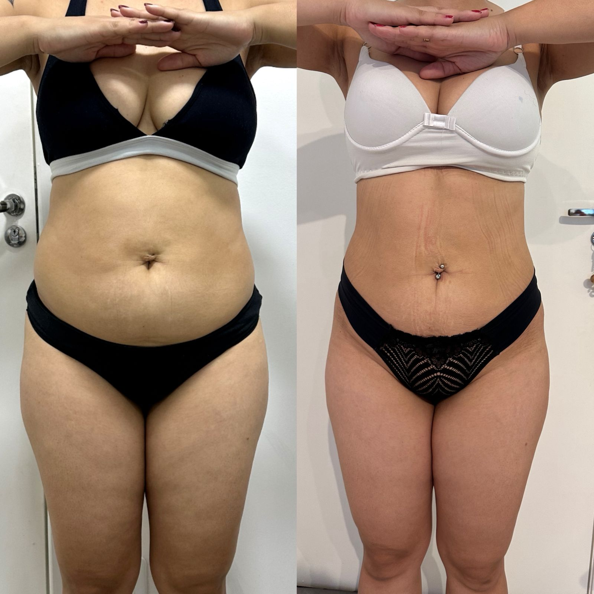
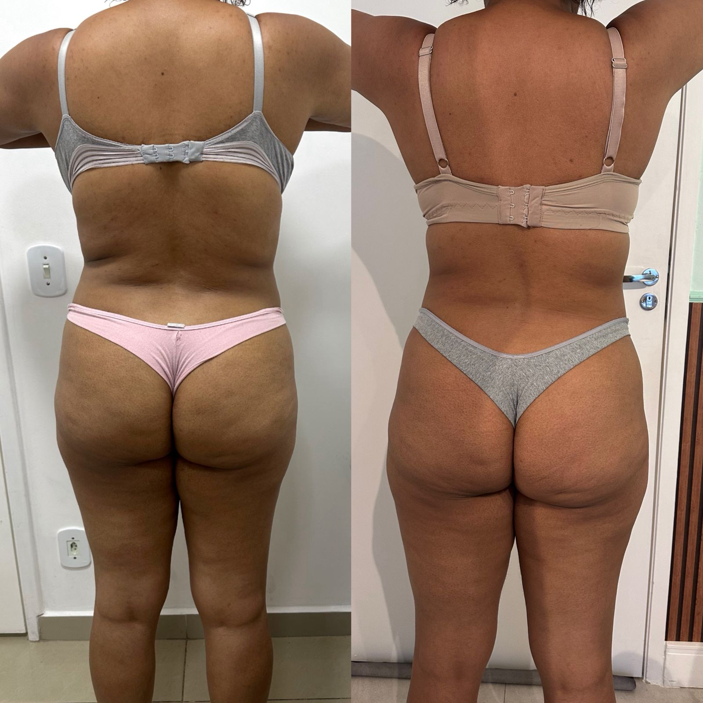
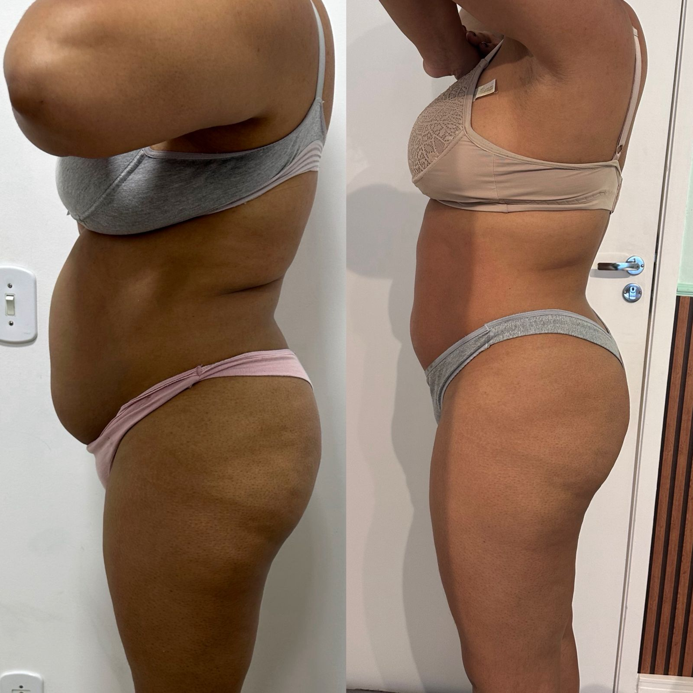
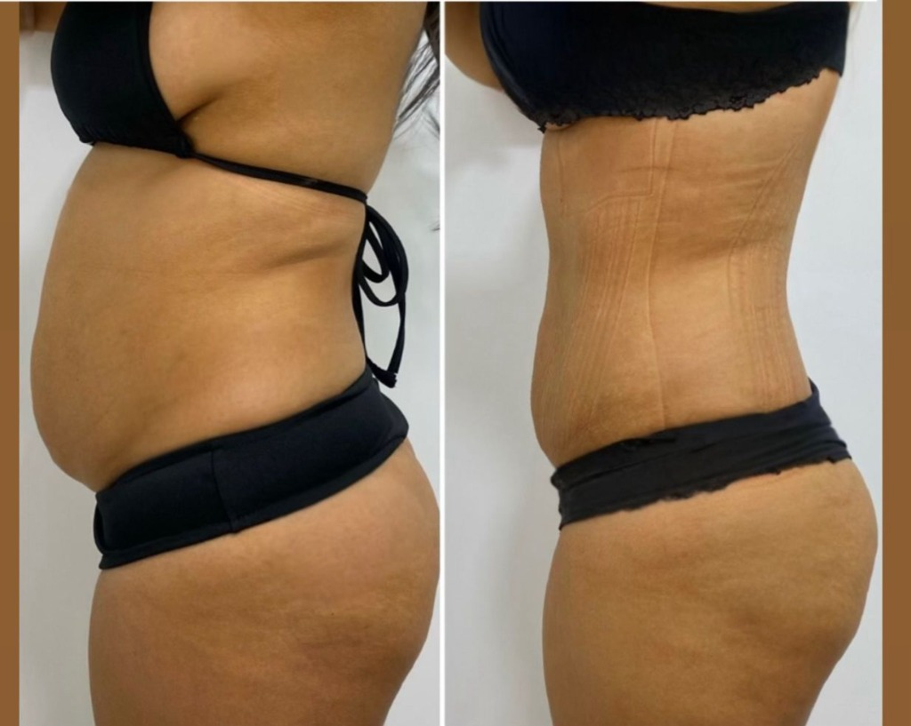
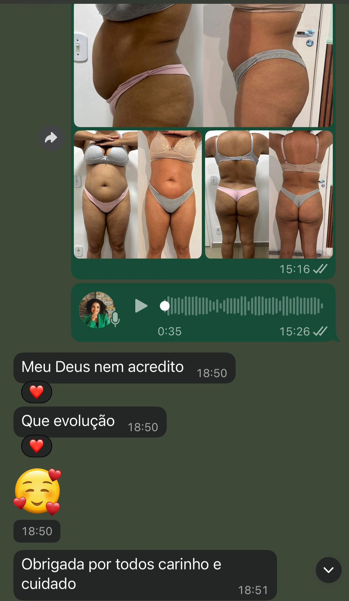
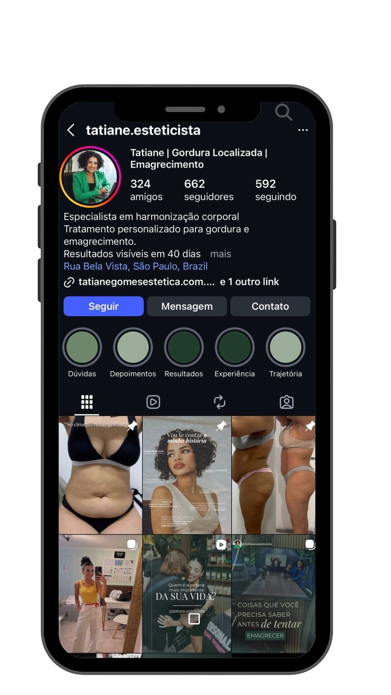

Acompanhe meus bastidores e resultados reais
Compartilho rotina de atendimentos, explicações técnicas e resultados reais de pacientes.
Seguir no InstagramProtocolo exclusivo que combina criolipólise de alta performance com remodelamento e harmonização corporal — sem cirurgia, sem downtime.
Esteticista graduada e pós-graduada em Saúde Estética e Cosmetologia pela UNIFESP, com mais de 7 anos de experiência em tratamentos corporais e gordura localizada.
Vagas limitadas essa semana para avaliação. Se você quer eliminar gordura e remodelar seu corpo, esse é o momento.
Clique no botão e abra uma conversa comigo com a mensagem já pronta. É só enviar e pronto.
Quero conhecer o Crio Slim (me chama no WhatsApp) Quero entender meu caso7 anos de experiência • Pós-graduação pela UNIFESP • Atendimento privativo e personalizado

Algumas áreas do corpo possuem maior concentração de receptores que dificultam a mobilização da gordura. Por isso muitas mulheres treinam, cuidam da alimentação e mesmo assim continuam com gordura localizada na barriga ou flancos. Nesses casos, o tratamento precisa ser estratégico e direcionado.
Preencha rápido e eu te explico o melhor caminho para o seu caso
O Crio Slim é um protocolo corporal premium que une criolipólise de alta performance com técnicas de remodelamento e harmonização corporal. O resultado: eliminação de gordura localizada resistente com redefinição dos contornos do corpo.
Não é apenas criolipólise.
É um plano estruturado para eliminação, remodelamento e harmonização corporal completa.
Antes de iniciar qualquer protocolo, gosto que minhas pacientes entendam minha forma de trabalho e a lógica por trás do tratamento.
Em meu protocolo, cada etapa é pensada com critério técnico.
Utilizo equipamentos regulamentados, protocolos personalizados e acompanhamento contínuo.
Atendo poucas pacientes por mês, pois o acompanhamento é individual e estratégico.
Este protocolo é indicado para quem busca resultado real, não soluções rápidas ou promocionais.
Algumas áreas do corpo possuem maior concentração de receptores que dificultam a mobilização da gordura. Por isso muitas mulheres treinam, cuidam da alimentação e mesmo assim continuam com gordura localizada na barriga ou flancos. O protocolo Slim One foi desenvolvido justamente para atuar nesses casos.
O protocolo Slim One é um plano estruturado para mulheres que desejam tratar gordura localizada de forma estratégica e acompanhada. Cada paciente passa por avaliação para definição de áreas, número de sessões e tecnologias complementares.
Resultados começam a ser percebidos a partir de 40 dias, respeitando o processo fisiológico do corpo.





Estou com vagas limitadas essa semana para avaliação. Se você quer tratar gordura localizada de forma estratégica, esse é o momento.
Clique no botão e abra uma conversa comigo com a mensagem já pronta. É só enviar e pronto.
Quero eliminar minha gordura localizada (me chama no WhatsApp)“Eu treinava, tentava dieta, mas aquela gordura resistente não ia embora de jeito nenhum. Quando fiz o protocolo com a Tatiane, eu senti que alguém finalmente entendeu o meu corpo. Não foi só estética, ela redesenhou meu contorno e elevou minha autoestima. Hoje eu me olho no espelho com muito orgulho.”
“Eu já tinha feito vários procedimentos antes, mas sempre parecia que faltava alguma coisa. Com a Tatiane foi diferente. Ela olha cada detalhe do corpo, explica tudo com clareza e monta um plano estratégico. Não é só aplicar o aparelho. Eu vi resultado real na gordura localizada e na flacidez. Vale cada centavo.”
“Eu sou muito criteriosa com tudo que faço no meu corpo. Desde a consulta eu percebi o nível de profissionalismo. A Tatiane é extremamente detalhista e segura no que faz. O resultado foi visível e natural, sem exageros. É outro padrão de atendimento.”
Com fácil acesso para:
Endereço Completo
Rua Bela Vista, número 580, sala 14
Santo Amaro
Atendimento em parceria com Zeni Estética.
Endereço Completo
Rua Sen. César Lacerda Vergueiro, 393
Sala 43 – Vila Madalena
Escolha a unidade mais próxima de você e fale comigo direto no WhatsApp para avaliação.
Quero agendar na unidade mais próxima
Não trabalho com pacotes genéricos.
Cada paciente passa por avaliação estratégica para definir áreas, número de sessões e tecnologias
complementares.
Vagas limitadas por semana para manter qualidade e resultado.

Compartilho rotina de atendimentos, explicações técnicas e resultados reais de pacientes.
Seguir no Instagram